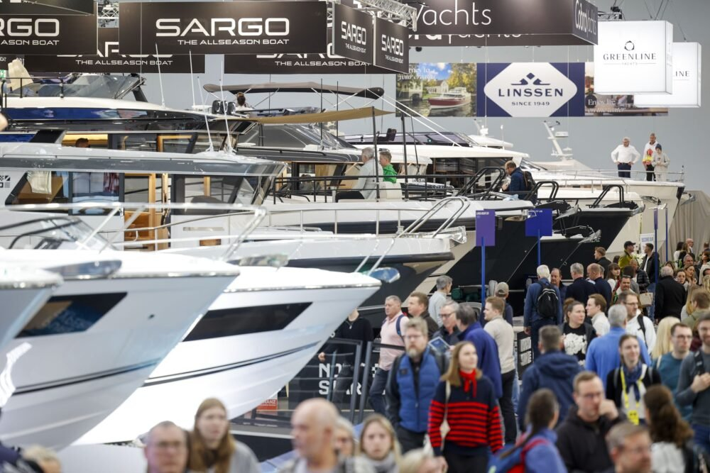

Conferences · Boat & Yacht
boot Düsseldorf 2027
- Dates
- –
- Venue
- Messe Düsseldorf
- Location
- Düsseldorf, Germany
- Format
- In-person
- Category
- Boat & Yacht
- Industry
- Yachting
- Organiser
- Messe Düsseldorf GmbH
- Official website
- https://www.boot.com/en/Exhibit/Information/Data_Facts
- Tickets
- https://www.boot.com/en/Visit/Tickets_Vouchers
About
The world's leading indoor water-sports and boat show. Official press material of 12 Oct 2026 says more than 1,500 manufacturers, retailers and destinations are expected; no official upcoming-edition visitor total was published.
Topics: boat show, yachting, watersports, marine.
No organiser attendance figure found on the official pages fetched 24 Nov 2026 for this upcoming edition. Ranked by our estimated size tier 'very large' (100,000+ attendees/visits), a judgement from format, venue and scale, not an official number.
Sources
- Official — https://www.boot.com/en/Exhibit/Information/Data_Facts
- Official — https://www.boot.com/en/Visit/Tickets_Vouchers
- Official — https://www.boot.com/en/Media_News/Press/Press_Material/Press_Releases/boot_2027_brings_the_maritime_world_to_D%C3%BCsseldorf
Hotels
- Steigenberger Parkhotel — 5★ · Königsallee 1 a, 40212 Düsseldorf, Germany · 4.5 km from the venue · Price on request
- Hotel Breidenbacher Hof — 5★ · Königsallee 11, 40212 Düsseldorf, Germany · 4.6 km from the venue · Price on request
- Tulip Inn Düsseldorf Arena — 4★ · Arena Str. 3, 40474 Düsseldorf, Germany · 0.5 km from the venue · Price on request
- Hotel-Restaurant Ashley's Garden — 4★ · Karl-Kleppe-Straße 20, 40474 Düsseldorf, Germany · 1.2 km from the venue · Price on request
- Lindner Hotel Düsseldorf Seestern — 4★ · Lütticher Str. 130, 40547 Düsseldorf, Germany · 1.7 km from the venue · Price on request
- INNSIDE by Meliã Düsseldorf Seestern — 4★ · Niederkasseler Lohweg 18 a, 40547 Düsseldorf, Germany · 2.0 km from the venue · Price on request
Venue
- Messe Düsseldorf — Exhibition grounds · Stockumer Kirchstraße 61, 40474 Düsseldorf